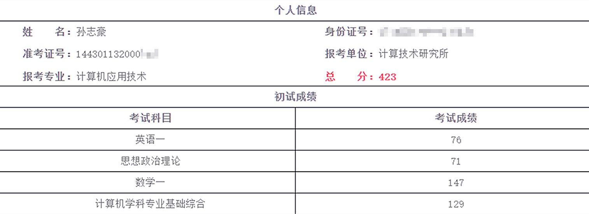
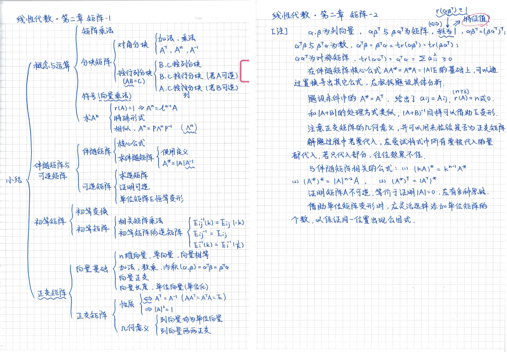

从南航到中科院计算所
写在前面
被拟录取的这一刻，我第一次真切地感受到什么是做梦的感觉.
3月30日，中科院计算所复试日程的第一天，上午结束了安排的两轮面试，下午收到了课题组老师发来的拟录取确认，几个小时内发生了太多太多的事情。
很感谢一路走来身边人的鼓励和支持，这对我实在是莫大的帮助。也很感谢大家对我成绩的认可，现在也总算能静下心来回顾自己的备考经历，算是一种回忆，也可以算是我的一些小小的经验，它们或许能给还在路上的你们一些启发。
考研的经验贴种类繁多，所以我并不打算像一个“营销号”一样按时间线叙述我的备考过程，也不打算详细介绍各种课程和辅导资料的对比，也许我会更多地表达我对于每一科复习的浅显见解。实话是，我不希望这篇文章只是讲述了我的时间线，更希望这篇文章能够表达出我一路走来的所闻，所思，所想。而且这里有我不同时间、不同阶段的想法和方向，在复习的过程中也可以时常来看看，有了一定的备考经历之后或许会有不一样的收获。
我会尽量把我想说的清楚地表达出来，不过写到最后发现语言的确不够书面化，假若你有任何问题，也可以通过任何方式联系我，如果可以就尽管通过各种社交媒体联系我，或者也可以联系我的邮箱 sunzhihao_future@nuaa.edu.cn.

关于选择
除了一些“推免占据大部分的名额”、“报考人数逐年增加”之类的客观原因，我觉得一些“营销号”还有一些考研机构都处于各种各样的商业利益，给考研蒙上了一层神秘的面纱，导致我们没有办法理智地认识考研这件事。所以这里的”选择“不只是选择目标院校，更重要的是选择要不要考研。
为什么要考研呢？好像我的答案说出来很虚伪，不过我的真实想法就是，我认为当前学到的知识不过是整个计算机科学体系中最最基础的一部分，这些知识甚至算不上真正的计算机科学，我没有办法满足于此。所以我认为应该首先让自己内心渴望读研，而不是为了之后的利益“被迫”读研，这样的心理支撑是我走到最后的关键。
关于选择合适自己的目标院校，我不否认我们确实需要客观评价一些事情来权衡自己的选择，这其中应该包括本科院校、学业成绩、学科竞赛以及科创项目经历等，不过我认为我们不应该太看重这些过去的经历，同样也应该去了解自己的心里预期，以及在未来备考的一年中自己能够达到一种什么样的复习状态。我不太确定我是否清楚地表达出了我的意思，因为这些因素也确实都是值得权衡的事情，没有一个明确的标准，我只是想表达：我们不应该给自己太多限制以至于畏手畏脚。
选择到底重不重要呢？从现在我的角度去看，这是个很有趣的问题。假若我的初试成绩没有通过复试，然而却超过了隔壁学校的复试线30分，我因此考研失败，”选择“当然对我很重要；不过我今年考了423分，”选择“对我来说就好像并没有刚才所说的那么重要了。我们在最一开始选择的时候只能参考该院校该专业往年的分数线，但是这只能大概预测未来的分数，不确定性太大，以此作为依据并不稳妥，今年中科大软件学院就是个很好的例子。而且近年来命题逐步统一，报考不同的学校并不会太影响你的初试分数，当选择一个看起来似乎难度较低的学校时，你要面对的初试并没有简单很多。
综上，如果你决定要考研了，那就选择一个自己真正想去的学校，不要太纠结是否能考得上，有这些纠结的时间不如踏踏实实学习，唯独自己的初试分数才是真正自己能把握的东西，也是最稳妥的保障。
关于初试
就像一开始提到的，我并不想把重点放在每个阶段该做什么，我会介绍我认为有效的学习方法以及我学习过的教材和课程，至于具体的时间安排还希望各位能够结合自己的基础、时间等方方面面的事情去考虑。
数学：有始有终
张宇老师说过，大家都是150的苗子，这不是一句玩笑话.
首先想交代一下我的情况，因为可能我的情况相对比较特殊。首先是本科期间修读的课程成绩太差，数学一的试卷由三个科目组成，而我这三门课的成绩都很丢人，高等数学I(1) 64，高等数学I(2) 82，线性代数 81，概率论与数理统计II 81。其次是我的备考时间太长，从大二学年的暑假开始，并且前面三百天的时间都只集中在了数学课程的复习上。我猜想大部分人的数学成绩都远好于我，而且大部分人在看到这篇文章时，备考时间也要远少于我，还是那句话，我的过往只是参考，皮一下，突然想起一句最近常听到的而且很应景的话：所有言论不构成任何投资建议，投资者应该独立判断并且自行做出决策，投资有风险，入市需谨慎。
对于考研数学的复习，我认为最好的课程搭配如下：张宇老师的高等数学、李永乐老师的线性代数、方浩老师的概率论与数理统计，虽然大部分老师出于利益和其他的一些原因，都会讲授全部的科目，但是这些老师的确有自己擅长的领域，在某一个学科上更有经验。这三位老师的授课习惯我觉得大部分人是可以接受的，而且作为学生我们也应该适应老师，所以如果实在不确定这三位老师是否适合你，我觉得最快最有效的方法就是去试听老师的课程，包括阅读这些老师主编的教材以了解授课的难度。
这里之所以先介绍了老师，而不是直接介绍我选择的教材，是因为我觉得在复习的起步阶段，听课的收获要比自己看教程的收获多得多，尽管这样可能要花费更多的时间，所以如果没有数学竞赛国奖的基础，我还是不太赞成自己看教材备考。一旦确定了老师，教材也理应选择由他主编的教材，这样会方便跟上课程的节奏，不至于在听课时把太多时间浪费、浪费、浪费（此处不是笔误）在记笔记上。
至于习题集，我倒觉得差别不大，关于不同老师编写的习题集的对比也可以很轻松地在各个平台搜索到。做题的原则当然是以做题的质量为主，不过以我的经验来看，凡是能找到的就都做了不会有任何坏处。在我整个复习数学的过程中，我一直很担心会忘掉做过的题目，不过现在来看这并不是值得关注的一个点，做题更重要的是总结思路，而不是记忆题目，在备考刷题的过程中尝试去和命题人博弈，试着去总结命题人的思路，而不是被动的”挨打“。
这里还要着重推荐一本比较小众的教材，就是由李正元老师主编的《数学复习全书》，我认为这本教材对我数学取得147分的成绩起到了至关重要的作用。这本书的确很小众，我在考研备考期间主要呆在了两个大学的图书馆，一个是我们南航的图书馆，另一个是湖南大学的图书馆，经过我的观察，这本书相较于张宇老师系列教材的出镜率来说简直是冷门。首先一个原因是这本教材并没有配套的官方课程，主编李正老师也没有自己的考研辅导课程，因此知名度不高；其次就是这本教材的难度不低，很容易受到打击，当时我在跟完张宇老师的基础班以后，也基本上没有一道能完整做出来的题目，不过这些题目并不是偏题怪题，只是综合性很强，但是很能锻炼做题的思维，这本书的高等数学部分我前前后后刷完了三遍，感觉只是这本教材上的题目就足够了，如果能充分吸收这些题目的话，其他习题册就会显得不太重要了。所以如果在一开始就有比较不错的基础，或者是到复习的后期，这本书既可以作为一本总结思路的工具书，也是一本题目质量很高的习题册，每一道题目都值得反复琢磨。

上面这两页笔记来自我作为终极强迫症留到最后的一本属于自己的数学笔记，我认为这样的笔记才是对于数学的复习最有效的笔记。思维导图能够在复习后期使自己快速回想起这一部分的知识；尝试用文字把一些常见的命题点和一些经典的解题策略记录下来，也可以使自己的思路更加清晰，同样方便复习回顾。总之，自己的笔记应该比教材更具系统性，起到提纲挈领的作用，否则就是在抄教材，毫无意义。我的笔记综合了我在上面提到的三位老师的课程中以及在李正元老师的教材中学到的所有知识，真正起到了在最后综合阶段让我能够快速回顾之前知识的作用，所以我会把它上传在这里提取码: elrg，如果链接失效了，也可以通过任何方式联系到我，我会及时更新。
来到最后的三个月时间，数学也应该进入最后阶段的复习，由于数学试卷结构的改革，之前的真题套卷并不能起到很好的模拟作用，但是真题的思路也是应该好好体会的，选择一些按照章节总结分类的真题习题册可以起到很好的效果，比如李正元老师主编的《数学历年习题解析》，也许这个时候你会再次发现，前几天刚刚做过的题目再次遇到的时候也会完全没有思路，千万不要太过纠结这些事情，也不要因此怀疑自己。
用模拟卷来训练自己十分必要，一方面是让自己不断接触新题，保持思路的活跃；另一方面是全真模拟考场的节奏，形成自己的做题顺序。切记，千万不要把做模拟卷的目的放在押题上。还是那句话，不要太在意刷题的数量，不过凡是能找到的就都做了也不会有任何坏处。我最后按照真实的考场时间做了28套模拟卷，包括张宇老师命制的12套，李林老师命制的12套，方浩老师命制的4套，所以就算到了最后，我的数学复习时间也能保证每天五个小时。求求各位，千万不要在最后放下数学，毫不夸张地说，只需要一天就会忘记泰勒展开是什么……
最后着重感谢一下宇哥，因为张宇老师是真真正正从我决定考研的第一天陪我走到了走上考场的最后一刻，也是我唯一花钱购买了正版课程的老师，很惭愧。宇哥的微博会时不时的发一些他想说的话，感觉很亲切，宇哥也有一个传统就是会在考试前的最后几天开启“每日一聊”，除了对知识的回顾，也是一种陪伴和鼓励，真的很感谢张宇老师，现在也可以真正跟宇哥说一句，分手快乐。
计算机学科专业基础综合：培养思维
比起这个科目的全称，也许更多人更熟悉它的科目代号.
先说一下我今年的分数，在考完以后，包括拿到自己成绩的时候，我都以为大部分的分数扣在了后面的主观题，没想到在之后复查的时候才发现，选择题错了7个，整整扣掉了14分，我做了11年真题，这是错的最多的一次。
先抛开408和其他自命题科目的区别不谈，计算机专业课无非就考察四门，数据结构、计算机组成原理、操作系统、计算机网络，我认为这些科目都和数学的学习有本质的区别，不应该在一开始就从题目入手，而要首先巩固学科基础知识，确保自己能够搭建起整个学科的知识网络。不太恰当地说，不管是数据结构、算法的提出者，还是计算机、操作系统、诸多网络协议的设计者，都要比那些数学家“正常”太多了，也许我们无法得知为什么要那样进行泰勒展开，但是我们可以通过一遍遍的学习去了解CPU到底是怎样逐步完善变成现在的样子的，尝试站在设计者的角度去理解这些知识，会有很惊喜的收获，这要比从题目中学习知识可靠得多。
回到408这个科目，首先是考察的学科最多，相较于一些院校只在初试考察数据结构一门或者两门来说，选择408的复习压力明显大得多；其次就是408题目的难度也和自命题科目不在一个水平上，我看过南航的自命题科目829，毫不夸张地说，829中的一道数据结构大题，在408里应该只能算作一道选择题，不只是难度，也还包括计算量、题目的创新度等。
王道考研应该是计算机考研里起步最早，到今天也是受众最多的机构，并且它的课程都是针对408的，虽然参考书上难免有些错误，不过整体来说还是很完美的。实话说，这四门课程我在本科期间都修读过，而且不管是理论课程还是实验与课程设计，我的分数都在95左右，但是我还是用一年的时间把四本王道书前前后后过了四遍，配套的课程也算是完整地听完了两遍，因为这四门加起来内容实在太多了，学完一遍基本上就把前面的忘掉了。针对这个问题我也想出了一个办法，就是在第一遍完整地过完这四门以后，之后复习可以任意组合这四门的复习，保证有两门是在同时复习的，比如先同时复习数据结构和计算机网络，之后再同时复习剩下的两门，这样既可以不让自己始终研究一门学科导致疲劳，也可以强迫自己将这四门联系起来，不至于完全孤立地学习这四门，而且本身它们之间就是有千丝万缕的联系的。
最后也要留出一到两个月的时间去适应真题，就像高考时的理综一样，也要培养自己在不同学科思维之间来回跳跃的能力。在按照年份把所有的真题做完一遍以后，就不难发现408的命题特点，命题新颖、细枝末节、学科综合，和数学一样，也要主动地去适应408的命题特点，如果真正理解消化了这12年的题目，说不定就可以预测到不少今年的出题点。
英语：加强阅读
英语不过是一门不熟悉的语言，和其他学科有本质的区别.
其实对于英语的学习，我并没有什么发言权，因为我的CET6连500分都还没刷到，也许只能针对考研中的英语说一些自己的想法。很纠结的一个问题是，英语的学习本来不应该是应试的，而且就算想要以应试的方式去准备这场考试，效果并不会太好。
单词积累很重要，背单词的方式有很多，比较推荐也是比较主流的分为两种，一种是买一本单词书，通过抄单词的方式背单词，这种方式可以参考“A4纸背单词”，B站就可以搜索到相关视频；另一种方式是使用一些背单词的app，包括“墨墨背单词”、“不背单词”等，主要还是根据自己的习惯选择，个人还是觉得使用app能够更方便的科学安排复习，不过殊途同归，终归还是为了记住单词。单词书比较推荐《红宝书》，它从前到后大致是按照考频安排的，所以按照一般习惯来说，前面的单词背的次数最多，也就正好是考频高的单词印象更深刻。
至于每天背单词的数量，建议新学数量和复习数量加起来不少于一百五十个，如果需要一个更好的分数或者报考的学校位于北京这类压分严重的地区，可能就要多努力一点，保证二百个以上，还是那句话，因人而异。也许这听起来是一个难以完成的任务，但是经过我和身边一些朋友的尝试，一开始完成这个任务可能需要花费80分钟的时间，不过在前期，复习英语的大部分时间都只用来背单词，所以整体时间上是可以安排过来的。一段时间以后适应了节奏，可能每天只需要花费50分钟的时间，余下来的时间可以分配给其它项目。不过由于一些app按照记忆遗忘曲线安排复习，就会导致在开始背单词的几个月后，每天需要复习的单词量达到上千，那段时间可以特殊对待，不过还是尽量不要堆积，最少要保证每天基础的学习量要完成。
对于长难句的学习，我是这样理解的，如果不是完全没学过语法，应该不必要花时间去系统地学习语法课程。而对于长难句，掌握一定的技巧可以锦上添花，不过它本身就是阅读，所以更好的方式是去培养阅读英文的习惯，在保证有效的阅读几个月后，自然就会发现掌握了这种阅读英文的习惯，也自然能理解各种从句的套娃。不管是在前期学习长难句，还是后期做阅读真题的时候，如果出现读不懂的情况，应该首先搞清楚自己的问题在哪里。一种是由于单词量不够导致的；另一种是刚刚提到的没有养成阅读英文的习惯，没有办法适应英文的“语序”。但其实我感觉大多数情况下还是由于单词的积累不够，举一个很容易理解的例子，就算一个老外叽里呱啦蹦了一堆词语，在语序完全不对的情况下，我们也大致可以理解他想要表达什么，不过这里我只是想强调单词的重要性，毕竟英语的学习并不单纯是为了应对这一次考研，我们更应该培养这样一种英文阅读习惯，这对于之后大量专业英文文献的阅读，以及英文论文的写作都是必不可少的，不能太过功利。
回归到整个复习的过程，我认为在考试这一年的暑假之前没有必要过早地接触阅读，踏踏实实地打好基础，多背几遍单词，每天认真分析积累一句长难句就足够了。从暑假开始保证每天一篇阅读，不查单词的情况下做完一遍，然后可以跟着唐迟老师针对这一篇阅读的讲解课程，去逐步培养自己的逻辑习惯，需要强调的是，千万别只顾着自己怎么想，要主动转变自己的思维方式，不要去纠结答案本身，也不要纠结自己的正确率；另外就是在做阅读的时候遇到不认识的单词千万不要查词典，“等到考试的时候我肯定已经背完好几遍单词了，到时候肯定都认识，所以现在我应该把不认识的都查出来才能够模拟到时候考场上的场景！”我很肯定地说，当初我的这种想法简直就是白日做梦，自毁前途；对完答案、听完讲解之后就可以把文章中的生词记录下来，也可以添加到app的生词本中，方便日后复习。到最后的两个月，可以逐步增加英语学习的时间，安排作文、翻译、新题型这几部分的复习，这部分真的拉不开差距，所以即便是到了最后，也一定要保证每天都做阅读真题，如果前期做得太快，到后期也要刻意地留出一定的量，保证最后几天做到的也是从未做过的阅读真题，这真的很重要。
上了考场就把自己想象成一个不懂中文的小朋友吧，尽情发挥，不要纠结，就算单词都不认识，也请一定相信自己的语感，也许在后来对答案的时候你就会发现，原来自己的阅读理解可以做的这么好。
政治：不急不躁
我的政治考的并不算太好，只能说没有拖后腿，所以我也不想介绍太多我的经验。简单来说，政治这门学科选择哪个老师的差别并不大，所以大可根据自己的眼缘和喜好来选择老师，比较有名气的就是徐涛老师和陆寓丰老师，也就是腿姐，不过一旦选择好了，就尽量跟着这位老师走到最后，没有必要像数学一样综合很多老师的课程，这样会很浪费时间，不要问我为什么知道……
写在最后
以上应该就是我现在能够回想起来的，或许能够称之为经验的一些事情，断断续续写了七天，最多的时候写到了一万字，删删改改最后变成了现在的样子，就像一开始说的，这是我对过去六百天的总结，也是给身边考研朋友的一些小建议，很希望能对你们有一些帮助。
致谢
从初试到复试，一路走来我确实付出了很多，不过这同样少不了身边人的支持和帮助。
非常感谢我的父母和家人能够毫不犹豫地支持我考研的决定，前前后后两年的时间也算不清楚已经为考研的复习资料花了多少钱，在每一次选择之后也都能听到身后无条件的支持，这些都是我能够静下心来全力备考的保障。非常感谢我的朋友在备考期间对我的鼓励和信任，也许只是一句简单的牵挂，或者是一通随意的电话，总能让压抑和郁闷烟消云散，“战友”之间的陪伴和监督也让我不断拥有前进的动力。还要感谢我的科创、毕业设计指导老师许建秋老师，在备考期间给了我充分的信任，让我可以尽量安排自己的时间，没有给我太多额外的压力，同时也给我了很多项目上的指导，这是我在复试中脱颖而出的关键。最后要感谢中科院计算所的曹娟老师，这份信任和认可让我可以实现在计算所攻读硕士学位的愿望，我也定不会辜负这份信任。
孙志豪
2021年4月10日
完稿于山东聊城，也许会继续更新